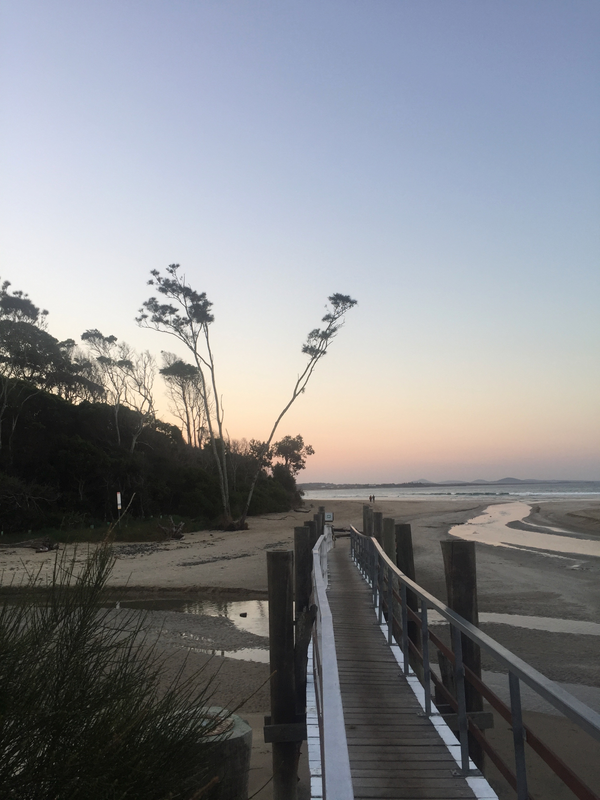

My name is rose but u can call me rosie or suki. If you want to please me, you can offer me a bouquet of flowers, a cappuccino and a date at the Musée d'Orsay. I like Monet's painting, golden jewelry, white tee-shirt, all Dior's collections and Asap Rocky.
here is the most inspiring instagram account for me :
Jacquemus' insta pageI love art and going to museums, there is nothing more inspiring and captivating. My two favorite painters will always be Vincent Van Gogh and Claude Monet. Their paintings make me dream and are absolutely beautiful.
Let's check this instagram account because sometimes I like to admire how beautiful love can be
Amours solitairesI went alone to Australia when I was 16 and it was the most incredible experience of my life.I can't explain everything I experienced in Australia but it was a life changing trip. You get up in the morning to surf at sunrise, you meet wild kangaroos on the way and you have a smoothie in front of the incredible Australian landscape
